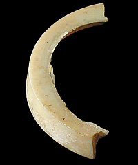
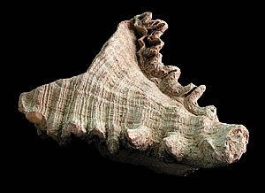

How do we know?Bangles of all shapes, sizes and decoration have been found at Indus Valley sites. So many of these bracelets have been found that it seems likely they were quite common. 
Several different materials were used to make bangles such as clay, shell, metal and faience. In addition, the quality of workmanship shown in the manufacture of the bracelets suggests that they were made for different levels of society. Conch shells like the ones below were used to make shell bracelets. 
|